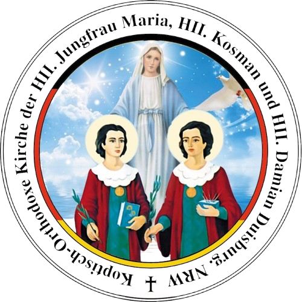

Duisburg
Koptisch-Orthodoxe Kirche der heiligen Jungfrau Maria, die heiligen Kosman und Damian
Parish · Diocese of Northern Germany
Address & contacts
Address
Zu Gast bei der kath. Gemeinde St. Bonifatius Kirche, Wanheimerstr. 161 b
47053 Duisburg Hochfeld
Service times
- Jeden Samstag: Liturgie 09:30-11:30 Uhr
- Jeden Samstag: Vesper und Mitternachtsgebet 18:00-21:00 Uhr
- Jeden Sonntag: Liturgie 09:30-12:00 Uhr
- Jeden Sonntag: Diakonenschule 12:30-13:00 Uhr
- Jeden Sonntag: Agape 13:00-13:45 Uhr
- Jeden Sonntag: Sonntagsschule 13:45-14:30 Uhr
Please note that times may change during fasting and festive seasons. Please contact the parish for up-to-date information.
Deacons
- Herr Milad Botros, Tel.: +49 152 08757971
- Herr Shenouda Abdelnour, Tel.: +49 159 01259225
Bank details
| Bank | Sparkasse Duisburg |
| IBAN | DE32 3505 0000 0200 3738 35 |